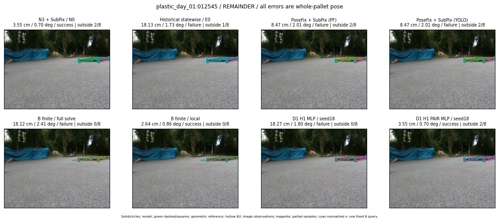

Whole-pallet pose errors; reference is a fixed geometric annotation, not certified physical GT.

Scores are uncalibrated logits. N0 retention is a numerical pose alias; it differs from H0 none or B fallback. B/I and profiles in baseline/B panels are original observations; L panels use new D1 observations. Only one deterministic supported B query is shown in a thumbnail; full support counts are below. Grey privacy rectangles edit the display copy only and are unrelated to O states; all observations were measured on original pixels. Thumbnails use JPEG quality85; detailed scientific panels are PNG.
| Method | Whole pose / cm, deg | Actual source | Selected ID | Score | Archived candidates | Eligible | N0 retained | H0 none | Fallback | Finite profiles |
|---|---|---|---|---|---|---|---|---|---|---|
| Raw YOLO + F | 15.84 cm / 1.15 deg / failure | OTHER | None | N/A | N/A | N/A | False | N/A | None | N/A |
| N3 + SubPix / N0 | 3.55 cm / 0.70 deg / success | N0 | None | N/A | N/A | N/A | True | N/A | None | N/A |
| Historical statewise / E0 | 18.13 cm / 1.73 deg / failure | E0_REGENERATED | None | N/A | N/A | N/A | False | N/A | False | N/A |
| PoseFix raw | 7.31 cm / 1.27 deg / failure | OTHER | None | N/A | N/A | N/A | False | N/A | None | N/A |
| PoseFix + SubPix (PF) | 8.47 cm / 2.01 deg / failure | OTHER | None | N/A | N/A | N/A | False | N/A | False | historical support records 9; finite audit N/A |
| PoseFix + SubPix (YOLO) | 8.47 cm / 2.01 deg / failure | OTHER | None | N/A | N/A | N/A | False | N/A | False | historical support records 9; finite audit N/A |
| Historical L, seed18 | 3.55 cm / 0.70 deg / success | N0 | N0 | N/A | 61 | 60 | True | True | True | N/A |
| Historical B fixed bank | 18.27 cm / 1.80 deg / failure | OTHER | G10/ORIGINAL_WD/sample/1 | N/A | N/A | N/A | False | N/A | False | N/A |
| Historical B full | 18.05 cm / 2.47 deg / failure | OTHER | NEW/B/ORIGINAL_WD/h0/G13/ORIGINAL_WD/sample/0/PROPOSED_NATIVE_YAW_0 | N/A | N/A | N/A | False | N/A | False | N/A |
| Historical edge full | 37882808.19 cm / 120.41 deg / failure | OTHER | NEW/edge/ORIGINAL_WD/h2/G13/SWAPPED_WD/sample/8/PROPOSED_NATIVE_YAW_2 | N/A | N/A | N/A | False | N/A | False | N/A |
| Historical AB full | 20.71 cm / 1.91 deg / failure | OTHER | NEW/AB/ORIGINAL_WD/h0/G13/ORIGINAL_WD/sample/0/PROPOSED_NATIVE_YAW_0 | N/A | N/A | N/A | False | N/A | False | N/A |
| B finite / fixed bank | 18.27 cm / 1.80 deg / failure | OTHER | G10/ORIGINAL_WD/sample/1 | N/A | N/A | N/A | False | N/A | False | 2/2 |
| B finite / full solve | 18.12 cm / 2.41 deg / failure | OTHER | NEW_FINITE/B/ORIGINAL_WD/h0/G13/ORIGINAL_WD/sample/0/PROPOSED_NATIVE_YAW_0 | N/A | N/A | N/A | False | N/A | False | 2/2 |
| B finite / local | 2.64 cm / 0.86 deg / success | OTHER | NEW_FINITE/B/ORIGINAL_WD/h0/N0_LOCAL_SAME_PHYSICAL_POSE/ORIGINAL_WD | N/A | N/A | N/A | False | N/A | False | 2/2 |
| Edge finite / full solve | 23.78 cm / 85.76 deg / failure | OTHER | G10/SWAPPED_WD/sample/1 | N/A | N/A | N/A | False | N/A | False | 2/2 |
| D0 H0 MLP / seed18 | 3.55 cm / 0.70 deg / success | N0 | N0 | 1.3689093589782715 | 30 | 29 | True | True | True | N/A |
| D0 H0 MLP / seed19 | 3.55 cm / 0.70 deg / success | N0 | N0 | 3.2411417961120605 | 30 | 29 | True | True | True | N/A |
| D0 H0 MLP / seed20 | 3.55 cm / 0.70 deg / success | N0 | N0 | -0.6384032964706421 | 30 | 29 | True | True | True | N/A |
| D0 H1 MLP / seed18 | 18.23 cm / 1.74 deg / failure | OTHER | G10/ORIGINAL_WD/selected | -2.6610240936279297 | 30 | 29 | False | False | False | N/A |
| D0 H1 MLP / seed19 | 18.27 cm / 1.80 deg / failure | OTHER | WD0/ORIGINAL_WD/selected | -3.5469727516174316 | 30 | 29 | False | False | False | N/A |
| D0 H1 MLP / seed20 | 18.27 cm / 1.80 deg / failure | OTHER | WD0/ORIGINAL_WD/selected | -4.069973945617676 | 30 | 29 | False | False | False | N/A |
| D1 H0 MLP / seed18 | 3.55 cm / 0.70 deg / success | N0 | N0 | 4.884345054626465 | 30 | 29 | True | True | True | N/A |
| D1 H0 MLP / seed19 | 3.55 cm / 0.70 deg / success | N0 | N0 | 6.658311367034912 | 30 | 29 | True | True | True | N/A |
| D1 H0 MLP / seed20 | 3.55 cm / 0.70 deg / success | N0 | N0 | 5.473949909210205 | 30 | 29 | True | True | True | N/A |
| D1 H1 MLP / seed18 | 18.27 cm / 1.80 deg / failure | OTHER | WD0/ORIGINAL_WD/selected | -1.4795814752578735 | 30 | 29 | False | False | False | N/A |
| D1 H1 MLP / seed19 | 18.27 cm / 1.80 deg / failure | OTHER | WD0/ORIGINAL_WD/selected | -1.5041946172714233 | 30 | 29 | False | False | False | N/A |
| D1 H1 MLP / seed20 | 18.27 cm / 1.80 deg / failure | OTHER | WD0/ORIGINAL_WD/selected | -1.5804699659347534 | 30 | 29 | False | False | False | N/A |
| D1 H1 ROLE AFFINE / seed18 | 18.27 cm / 1.80 deg / failure | OTHER | WD0/ORIGINAL_WD/selected | -0.872123122215271 | 30 | 29 | False | False | False | N/A |
| D1 H1 ROLE AFFINE / seed19 | 18.27 cm / 1.80 deg / failure | OTHER | WD0/ORIGINAL_WD/selected | -1.123442530632019 | 30 | 29 | False | False | False | N/A |
| D1 H1 ROLE AFFINE / seed20 | 3.55 cm / 0.70 deg / success | N0 | N0 | -1.3266080617904663 | 30 | 29 | True | False | False | N/A |
| D1 H1 PAIR MLP / seed18 | 3.55 cm / 0.70 deg / success | N0 | N0 | -2.237980604171753 | 30 | 2 | True | False | False | N/A |
| D1 H1 PAIR MLP / seed19 | 18.13 cm / 1.73 deg / failure | E0_REGENERATED | E0_REGENERATED | -2.3036727905273438 | 30 | 2 | False | False | False | N/A |
| D1 H1 PAIR MLP / seed20 | 18.13 cm / 1.73 deg / failure | E0_REGENERATED | E0_REGENERATED | -2.657651662826538 | 30 | 2 | False | False | False | N/A |
| D1 H1 PAIR ROLE AFFINE / seed18 | 18.13 cm / 1.73 deg / failure | E0_REGENERATED | E0_REGENERATED | -1.4442927837371826 | 30 | 2 | False | False | False | N/A |
| D1 H1 PAIR ROLE AFFINE / seed19 | 18.13 cm / 1.73 deg / failure | E0_REGENERATED | E0_REGENERATED | -1.8346214294433594 | 30 | 2 | False | False | False | N/A |
| D1 H1 PAIR ROLE AFFINE / seed20 | 3.55 cm / 0.70 deg / success | N0 | N0 | -1.3719382286071777 | 30 | 2 | True | False | False | N/A |
| Regenerated common E0 | 18.13 cm / 1.73 deg / failure | E0_REGENERATED | E0_REGENERATED | N/A | N/A | N/A | False | N/A | False | N/A |